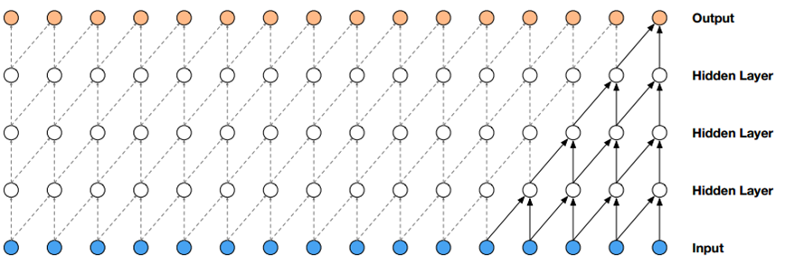
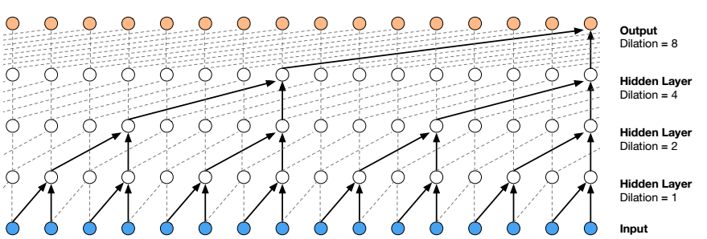
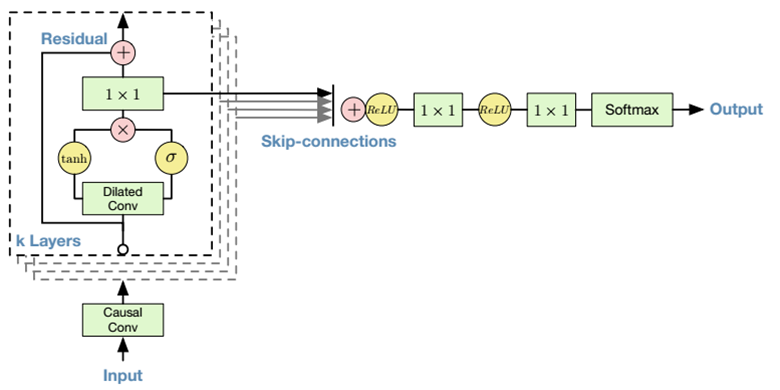

【转载请注明出处】mlwoo.github.io
【利益相关】TTS上的有关成果不归本人所有。对于某些细节，本文可能略去。
什么是TTS
TTS旨在搭建一个将正则化的自然语言的文本转化成语音的系统。文本正则化通常包括分词（英文不存在这个问题），特殊字符的处理（比如阿拉伯数字的解释可以是数词也可以是电话号码）等问题。一个理想的TTS系统至少在intelligence和naturalness达到优秀的要求。前者能保证听众能轻松而准确获取想要表达的信息，后者使得生成的语音听起来确实像人类发出的声音。根据目前我获得的反馈来说，实际上第二个要求非常有意思：有的人认为TTS生成的一长段语音似乎过于顺畅，倒不是像人类在正常对话中应该有的表现。
TTS应用场景
TTS应用场景非常广泛，不再赘述。不过TTS的DL类解决方案对场景非常依赖。
解决方案
目前主流的TTS的DL解决方案基本上不是端到端的解决方案，其pipeline可以划分成两步：
前端：文本转换成phonetic特征
后端：phonetic特征转换成waveform
尽管最新的百度的TTS的解决方案Clarinet宣称是端到端的解决方案，在模型设计上也没能摆脱pipeline分步走的范式，我个人认为它和它的前辈们并没有本质上的区别。至今仍是两步走的pipeline的原因稍后将详细阐述。
主要问题
TTS的DL解决方案面临几个重要的问题：
- 数据集
在DL时代，数据为王，重要性不言而喻。TTS数据集的制作比它的姊妹问题ASR要求要更加苛刻。
- 无噪声，此处噪声的并非单指只录制过程中的环境噪声。
- 专业的播音员，播音员除了字正腔圆之外，不得误读，还必须在播音过程中控制呼吸声、多余的齿音等等，否则就会引入噪声。
- 专业的录制环境和录制设备
- 数据清洗，即使严格控制上述的生产过程，还是会有些无效的数据需要剔除
- 文本标注
- 音频本身和文本标注需要内部高度的一致性
- 跨模型时无法建立很好的baseline
在复现各种模型时，我们希望通过建立客观的baseline进行结果比较，但是TTS的最终的输出结果是一个非常主观的结果。
- 缺乏公共的数据集（中文，英文可以使用LJSpeech）
- 客观评分不够主观，在不同的模型上即使使用相同的数据集和统一的损失函数，loss低的模型生成的效果不一定比loss高的效果要好。
举一个极端的例子，在测试时，A模型启动稍慢（状态初始化到状态进入能够working的状态）的预测的结果总是比target延迟若干个sample point的loss就会很大（几乎处处不相等），但是它实际上波形与target是一样的，只不过是延迟了几个sample point，这是人根本无法分辨出来的。 - 主观的评分总是主观的
- 极高的计算需求
以16K采样率的音频为例，如果做到1X的实时速度，这意味着需要在1s完成16K个sample point的计算，平均一个点的模型计算花费时间0.0625ms。而往往1X的实时速度明显是不够用的。
- 非端到端的模型
- 从文本到语音是seq2seq模型如果做成完整的端到端模型，以15个字符与1s的音频对应的attention的计算都是非常恐怖的计算量。无论是训练还是推理速度都够让每个人抓狂。
- 文本的发音和frame-level的语音信息更相关，而不是一堆采样点的信息的堆积。
相关工作
在TTS领域，值得关注的论文主要是来自一些有影响力的比赛如Blizzard Challenge和interspeech，一些产业巨头如Google、百度和科大讯飞以及一些科研院所如Edinburgh大学和中国科研院。
国内也有一部分创新企业在这方面取得的成果也不错，如我了解的云之声和英语流利说都在积极推动TTS产业落地。当然经过追赶，相信未来我们组也会取得一些成果。下面是他们的一些最新的结果。（我并未一一拜读）
- CAS(中国科学院)
-
Generating Spectral Parameters with Neural Attention: seq2seq with attention and HMM aligner
相对于传统的TTS的前端的建模是分成多个步骤的pipeline，尽管使用了HMM这种传统的序列建模的方法，但该文是第一次在这个领域上进行了端到端的尝试。
-
Generating Spectral Parameters with Neural Attention: seq2seq with attention and HMM aligner
- Mila
-
CHAR2WAV: END-TO-END SPEECH SYNTHESIS
- Baidu
- Deep voice 1: Real-time Neural Text-to-Speech
这篇文章首次将前端中的所有模型换成NN模型进行了尝试 - Deep voice 2: Multi-Speaker Neural Text-to-Speech
- Deep voice 3: Scaling Text-to-Speech with Convolutional Sequence Learning
- Clarinet: Parallel Wave Generation in End-to-End Text-to-Speech
- Deep voice 1: Real-time Neural Text-to-Speech
- Google
- Tacotron 1: Towards End-to-End Speech Synthesis
- Tacotron 2: Natural TTS Synthesis by Conditioning WaveNet on Mel Spectrogram Predictions
- autoregressive wavenet: A Generative Model for Raw Audio
- parallel wavenet: Fast High-Fidelity Speech Synthesis
- wavernn: Efficient Neural Audio Synthesis
-
Zeyu Jin, Adam Finkelstein
-
FFTNet: a Real-Time Speaker-Dependent Neural Vocoder
无论声码器模型还是前端模型本质上是序列模型，典型的序列模型现在主流做法有两类：一类是循环模型，以RNN/LSTM为代表，一类是前馈模型，以wavenet/transformer为代表。 通常认为前馈模型训练更稳定，速度更快，而循环模型表达能力更强。然而在很多场景上用不上循环模型的更强的表达能力，这就十分尴尬了。
声码器之autoregressive wavenet
TTS的输出结果是一个主观结果，因此当你有一个非常良好的后端模型（声码器），你才有可能去评价一个前端模型结果的好坏。声码器处理的是frame-level的声音特征，即mel-spectrum。 它是将一个声音片段进行短时傅里叶变换得到频域信息再做了一个非线性变换得到的结果。频域信息较时域信息得到特征会更加健壮，这也是前文阐述的一些堆在一起的sample point是不存在太大价值的原因。 因为人耳并不是对所有频率上的信息具有等同的敏感性，因此更符合人耳频域选择的非线性的变换在TTS上是一个不错的选择。 建议TTS萌新们和一些在TTS上得到效果不尽人意的司机们一定要多留心Tacotron2模型关于mel-spectrum的介绍，因为mel-spectrum等数据预处理对最后的输出结果太重要了。基本结构
autoregressive wavenet就是序列模型建模中前馈模型的代表作。序列模型假定当前的观察到的变量是依赖于之前的变量而和之后的变量无关。假定有一组序列$\{x_0, x_1,...,x_T\}$，
根据序列模型的假设，观察到这组变量的概率为：$$ p(\mathbf{x}) = p(x_0)\prod_{t=1}^{T}p(x_t|x_0,..., x_{t-1}) $$ 这是一个完全阶的HMM模型。
通常在训练和推理过程中，序列模型必须完成之前时间点的变量结果之后才可以进行当前时间点变量的计算。这种依赖关系导致模型的计算是串行的，使得计算变得十分低效。以RNN的循环模型为例，
尽管在训练过程中所有时刻的可观察变量都是已知的，但是cell的hidden state却是依赖于前一个cell的hidden state，因此它的计算在时间方向上仍是串行的。
wavenet引入了一种特殊的卷积层来表征这种依赖关系，同时摒弃了显式的hidden state，使得在训练过程中计算得以并行，这种卷积层被称之为causal layer。
如图所示
在这个网络中，每一时刻的输出都会作为下一个时刻的输入，而不是RNN中hidden state 作为下个cell的一个输入，这同样表征了序列上的依赖关系，也是一种自回归模型。在推理过程中，wavenet只能串行计算。
但在训练过程中所有时间点的可观察变量都是可知的，即网络底部的输入都是已知的，因此在训练时计算可以并行。
以图中最右端的实线部分为例，假定最后一层的橙色输出的时刻为$t+1$, 与之关联的蓝色输入的时刻有五个可观察变量为$x_{t-4},x_{t-3},x_{t-2},x_{t-1},x_t$,这是一个五阶的HMM模型，整个模型的概率表示为：
$$ p(\mathbf{x}) = p(x_0)p(x_1|x_0)p(x_2|x_0,x_1)p(x_2|x_0,x_1)p(x_3|x_0,x_1,x_2)p(x_4|x_0,x_1,x_2,x_3)\prod_{t=5}^{T}p(x_t|x_{t-5},..., x_{t-1}) $$随着层数的增加，其HMM的阶数将不断增高，
直至可以表达完全阶的HMM模型。
每个输出点的感受域（即依赖的输出点的个数）可由卷积核的大小与层数的和减去1来表示。以16KHz采样率的音频为例，若表示一个采样点与之前20ms的采样点存在依赖关系，那么感受域为320。若卷积核大小为2，
则需要319层卷积层。那么至少需要经过319层的卷积层才能得到一个采样点的输出，这个模型参数和计算量都是十分惊人的，因此只使用causal layer显然是不现实的。
文章引入了Dilated Conv使得感受域大小随着卷积层的增加指数级的增大，如果所示
很显然Dilated Conv能有效地增大感受域，但是这是一种近似，会损失部分信息。因此是按照感受域{2, 4, 8, ..., 512}, .., {2, 4, 8, ..., 512}的感受域重复使用Dilated conv结构的，形成stack。在有效扩大
感受域的同时减少时序关联上的信息
作为声波的生成式模型的wavenet借鉴了图像生成式模型PixelRNN、pixelCNN和pixelCNN++中一个很重要的结构，有趣的是这个结构是循环模型LSTM中记忆门。
其数学公式为$$ \mathbf{y} = tanh(W_{k,f}*X) \odot \sigma(W_{k,g}*X) $$
个人认为这是一种内部attention机制，通过这种内部作用萃取更为有效的信息。
这样就有了整个autoregressive wavenet的基本结构，如图所示
图中residual connection已经是DL网络结构中的基本操作了。而将每个stack的输出的结果跨stack进行相加可以看成是各个stack感受域上进行ensemble，这和SSD也没有实质上的区别。
到目前为止，不少同学会说这个模型的输入输出就是声波的采样点是自己跟自己跟自己玩，这可能会提高声波的内部质量，但是没有解释wavenet是如何将mel-spectrum转换成声音的。
wavenet可以在attention机制的记忆门传递两种信息，一种是随着时间而变化的局部信息，如mel-spectrum。另一种是具有时间不变性的全局信息，如说话者id信息。
见公式：$$ \mathbf{y} = tanh(W_{k,f}*X + V_{k,f}^{T}g) \odot \sigma(W_{k,g}*X + V_{k,g}^{T}g) $$
$$ \mathbf{y} = tanh(W_{k,f}*X + V_{k,f}*l) \odot \sigma(W_{k,g}*X + V_{k,g}*l) $$
其中变量g表示全局信息，变量l表示局部信息。h、l必须和x保持具有相同的时间长度才能使得计算自洽。而frame-level的mel-spectrum时间方向上的长度少于time-level的采样点信息，
所以通常做法是对mel-spectrum做transpose conv的上采样操作或者是repete成多份（这是一种近似）使得时间方向上的自洽。而全局信息不随时间改变，各个时间点上使用同一个信息即可。
最后输出的声波的建模使用mixture of logistics（MoL），这也是借鉴了图像生成式模型的建模模型。至于选择MoL建模的假设是一种选择，这也是后来Clarinet在wavenet上改进的一个重要方向，后面再详细介绍。
模型特点
- 贡献
- 生成的语音非常自然
- 可以以speaker的id信息建模，单模型可以生成多个说话者风格的声音
- 训练过程计算得以并行，训练效率很高
- 在较小的数据集上也可以获得不错的结果
- 是序列模型中前馈模型的代表作
- 不足
- 推理过程计算串行，这给TTS产业部署带来极大的困难
声码器之parallel wavenet
很显然，autoregressive wavenet在做inference时由于无法事先获得前面若干sample而无法并行化的，那么这个问题该怎么解决呢。 假定我们有一个Fibonacci sequence，即$$ t_n =\left\{ \begin{array} & 1,\: \: \: \: \: if\: \: n = 0 & \\ 1,\: \: \: \: \: if\: \: n = 1 & \\ t_{n-1} + t_{n-2}, \: \: \: \: \: if\: \: n \geq 2\end{array}\right.$$ 训练网络时，所有时刻的sample point是已知的，使得训练时得以并行。